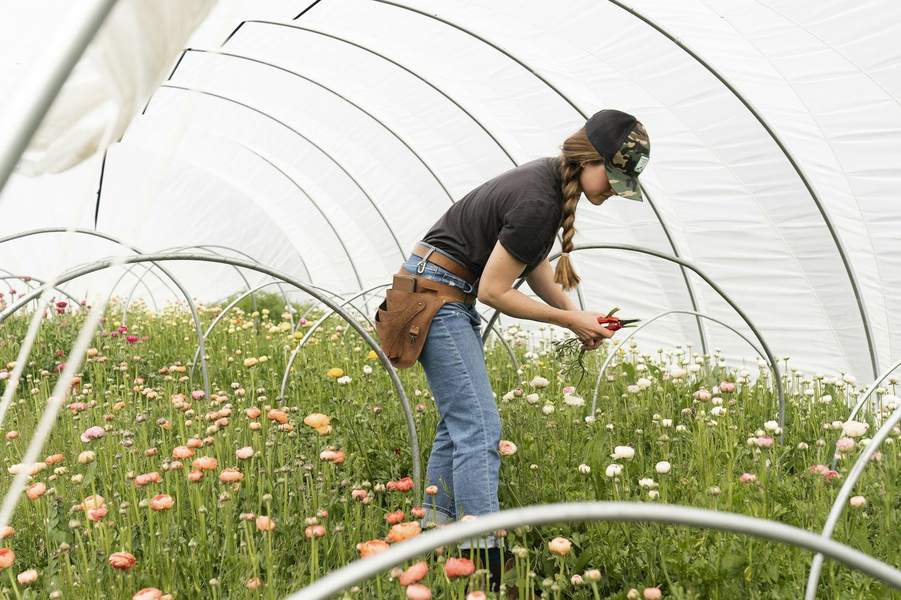
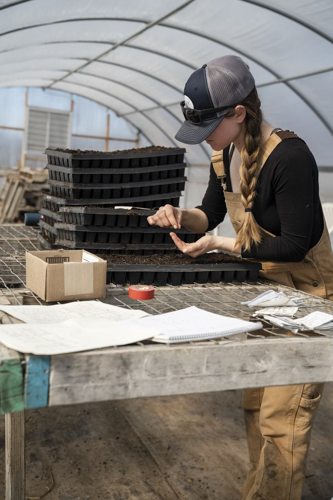
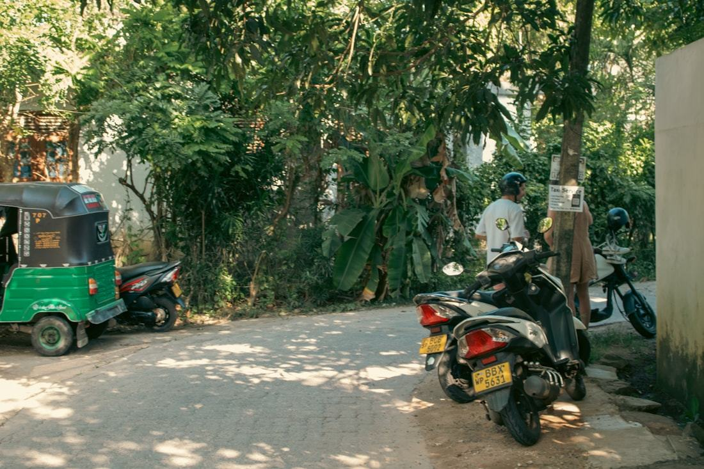

Farmers and growers
Local cultivators improving yield, reliability and the way they grow.
About Agroly Lanka
A Sri Lankan sustainable agriculture company working across greenhouse construction, consultancy, agricultural inputs, hydroponics and premium coir based growing media.

When a customer chooses us instead of the alternative, they are really choosing a complete agricultural partner.
That means practical expertise, modern technology, reliable growing solutions and a genuine commitment to sustainable agriculture — held together by one team rather than spread across suppliers who never speak to each other. We work with growers who want to cultivate more efficiently and reliably, and who need the right structure, media, irrigation and guidance to get there.
What we do
Most projects touch more than one of these. Take a single piece, or let us handle the structure, the system and the media together.

Poly-tunnel systems and custom greenhouse structures, designed for the climate they stand in and the crop they hold.
Explore greenhouses
Consultancy and technical advice, irrigation and hydroponic systems, seeds and planting materials, and training programmes.
Explore services
Coco peat grow bags, slabs, blocks, bales, seed starter and open top planter bags — supplied locally and to international markets.
Explore growing mediaHow we work
We would rather understand the requirement first and price it second. That is why there is no fixed price list on this site — the cost of a greenhouse or a media order depends on what it has to do.

What you want to grow, the site and climate you are growing in, and the scale you have in mind. A message on WhatsApp is enough to start.
We advise on the greenhouse design, growing media, irrigation or hydroponic approach that suits your crop and conditions — not a standard package.
Pricing follows the plan, based on the product, the design, the project size and your requirements. Warranties and guarantees depend on what is being supplied, so we set those out here too.
We construct the greenhouse or supply the order, and where it helps we run training so your team can operate the system confidently afterwards.


Sustainability & community
Coir begins as a by-product of the coconut harvest, and that harvest happens in villages. We source our coconut based raw materials directly from rural, family based producers, at fair prices.
This is the part of the business we are least willing to compromise on. Buying direct supports sustainable livelihoods in the communities we work with, and it keeps quality and traceability intact from the husk through to the finished growing medium.
No chain of middlemen between the household producing the raw material and us.
Steady demand for a crop by-product that would otherwise go to waste.
We know which batch came from where, and can tell you when you ask.
Who we work with
We are based in Sri Lanka and serve customers here and overseas. The work looks different in each case, but the standard does not.
Local cultivators improving yield, reliability and the way they grow.
Growers and agricultural entrepreneurs establishing or scaling a modern cultivation operation.
Programme work where the system has to be specified, delivered and explained.
Overseas customers sourcing premium coco peat and coir based growing media.
Start here
Tell us what you want to grow and the conditions you are growing in. We will come back with tailored advice and a quotation for your project.